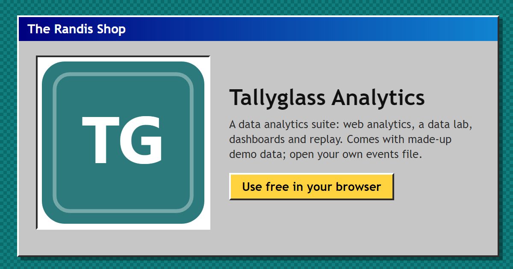

Tallyglass Analytics

A data analytics suite: web analytics, a data lab, dashboards and replay. Comes with made-up demo data; open your own events file.
Made with Randis UDS, a free desktop app that builds the tools you describe.

A data analytics suite: web analytics, a data lab, dashboards and replay. Comes with made-up demo data; open your own events file.
Made with Randis UDS, a free desktop app that builds the tools you describe.